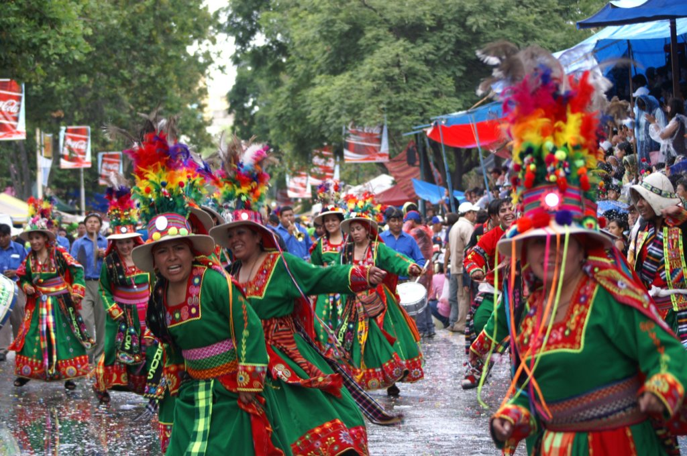
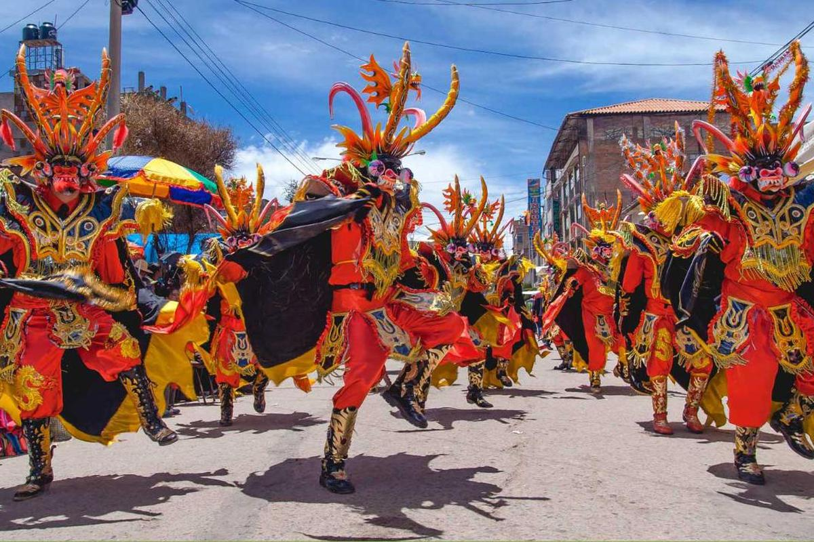
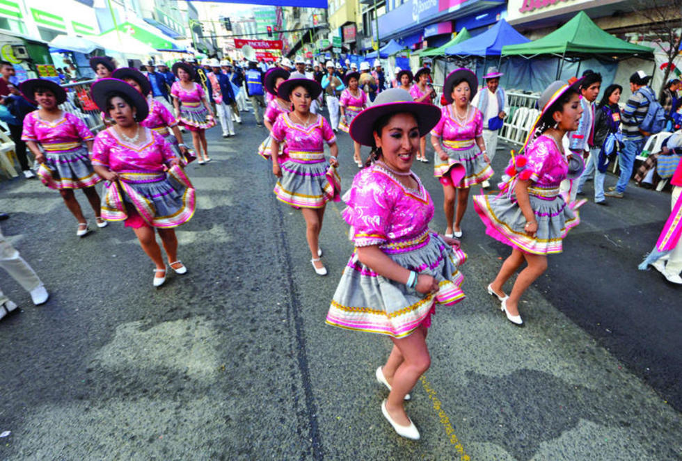
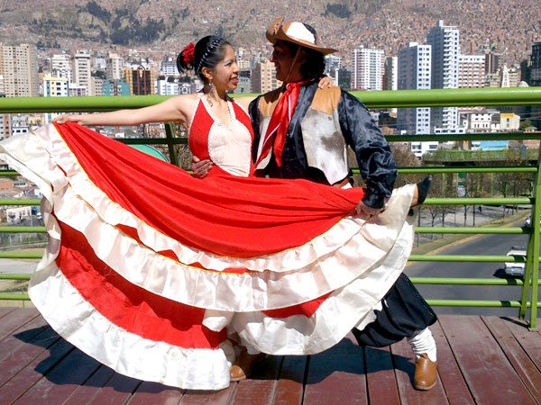

Tinkuy
Morenada
Diablada
Salay
Chacarrera
El Tinku es una pelea de cuerpo a cuerpo estimulada por el alcohol. Son adiestrados desde niños en lucha a muerte, ellos llevan la cabeza cubierta de una vestimenta de cuero llamada montera, similar a un casco tan duro como metal, las manos enguantadas en garras y aristas de bronce.

La Morenada o Danza de los Morenos es una danza de la zona altiplánica de Bolivia y Perú donde los bailarines se disfrazan como negros enmascarados con rasgos exagerados. El lugar preciso de su origen y el sentido de su simbología se pusieron en debate recientemente.
La diablada es una danza llamada así por la careta y el traje de diablo que usan los bailarínes. La danza representa el enfrentamiento entre las fuerzas del bien y del mal, reuniendo tanto elementos propios de la religión católica introducida durante la presencia hispánica como los del ritual tradicional andino


El Salay es una danza folclórica boliviana que nació en Jaihuayco una zona popular de la ciudad de Cochabamba. Esta danza inspirada en el zapateo de los valles bolivianos, y otros ritmos como el Huayño y el salaque, dieron origen a la danza del zapateo
La chacarera es un ritmo y danza tradicional de Argentina, principalmente de la provincia de Santiago del Estero, que también se practica al sur de Bolivia, sobre todo el departamento de Tarija Se ejecuta tradicionalmente con guitarra, violín y bombo legüero

NOMBRE: Daner Huaylla Avalos "1B"